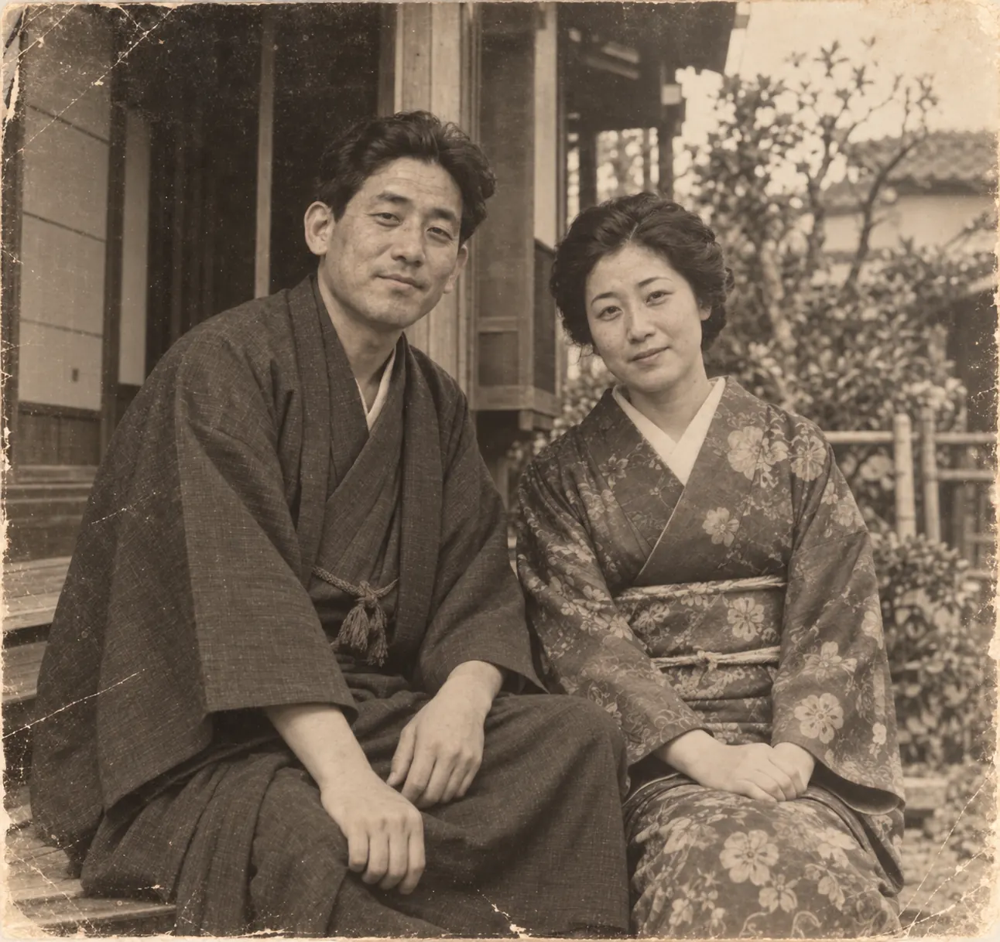
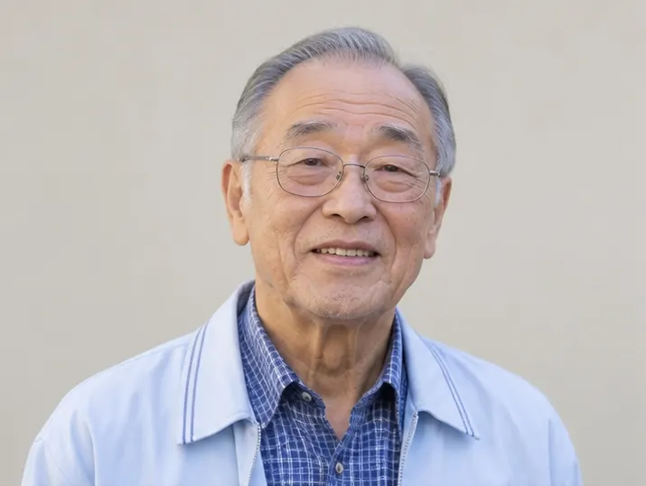
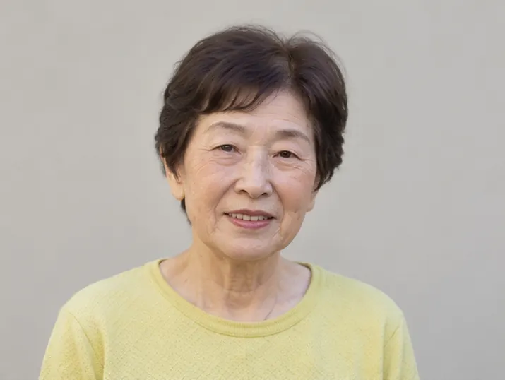
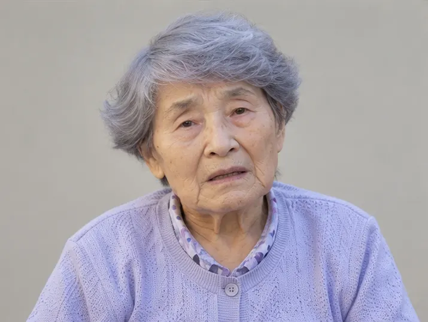
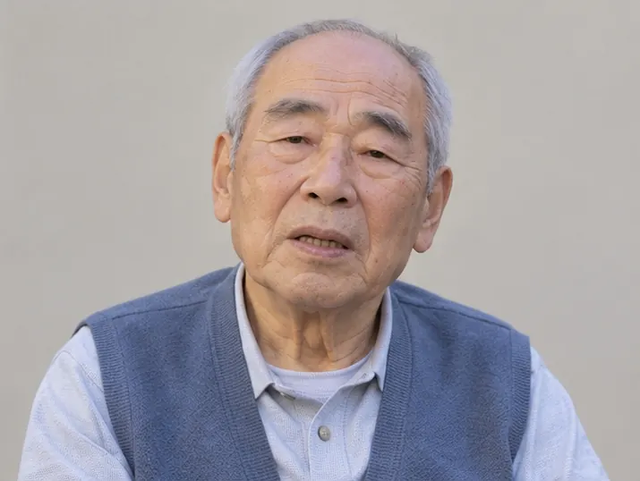
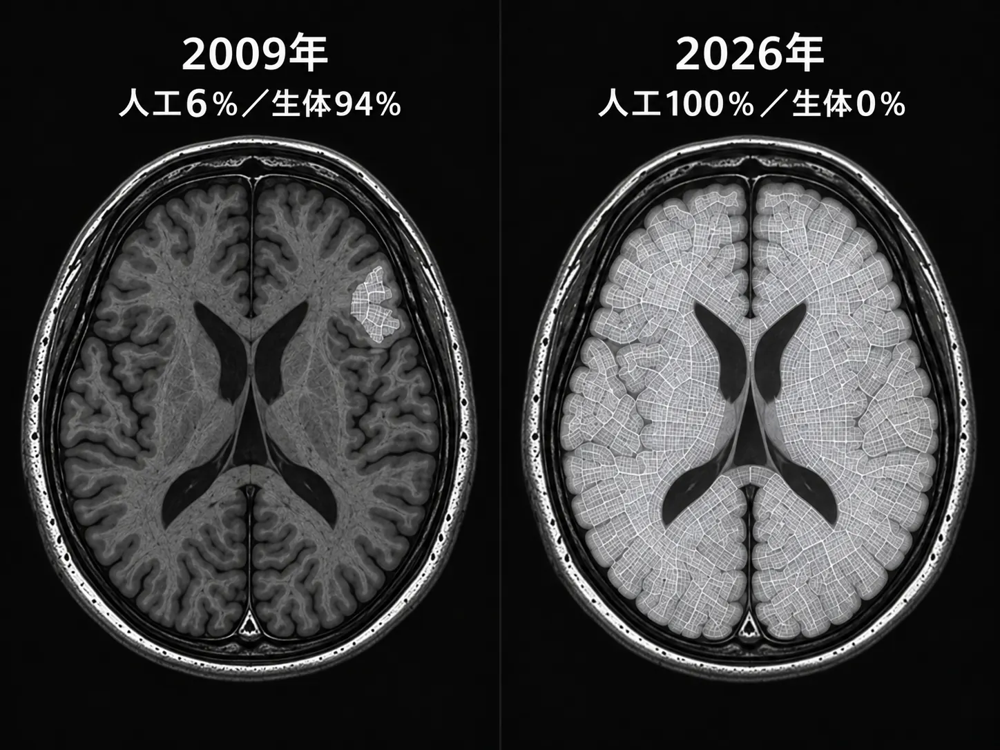
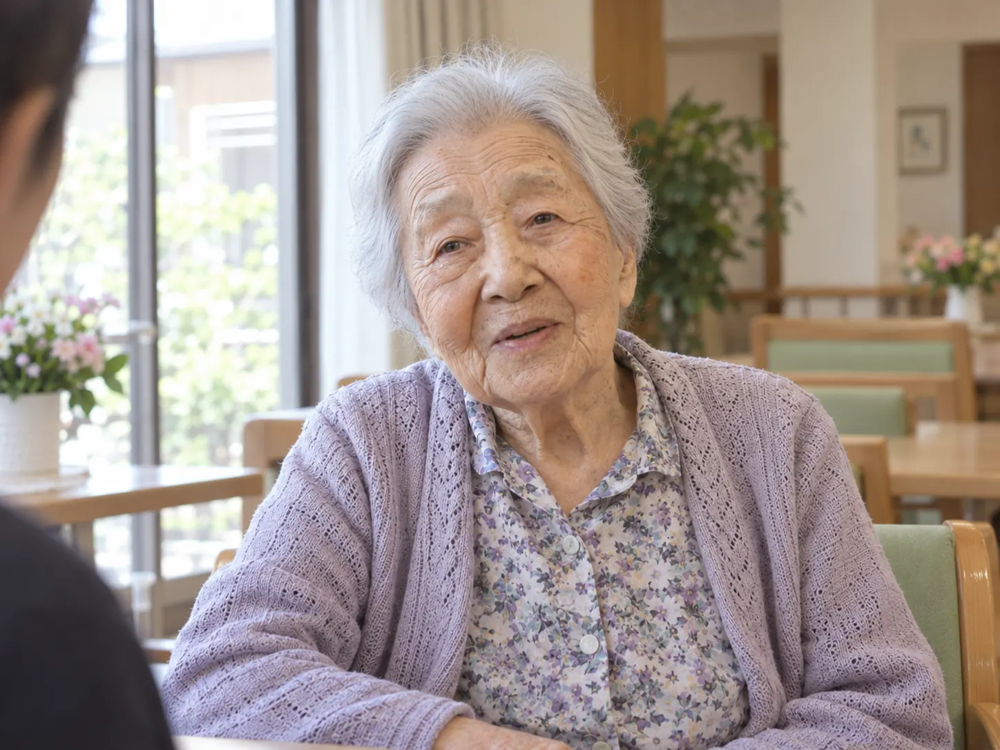

内部記録
人工神経置換研究
最終報告書
記録 01
研究開始の経緯

2008年、花澄の杜創設者・白石宗一郎の妻である
白石芳江に認知症の初期症状が確認された。
芳江本人は当時まだ十分な意思判断能力を有しており、
夫や娘との記憶を失い、
自分自身が変わっていくことへの強い恐怖を訴えていた。
白石宗一郎は妻の認知機能を維持する方法を求め、
提携医療研究機関へ新たな治療法の開発を依頼。
認知症によって失われる前の神経機能を
人工神経組織によって再現し、
段階的に置き換える研究が開始された。
白石芳江は、
研究のために選定された被験者ではない。
白石芳江を救うこと自体が、
本研究の開始理由である。
記録 02
初回処置
2009年、
芳江本人の同意のもとで初回処置を実施。
人工神経組織置換率
6％処置後記録
- 長期記憶
- 変化なし
- 言語能力
- 変化なし
- 家族認識
- 変化なし
- 人格
- 明確な変化なし
この結果を受け、
より広範囲の脳領域を人工神経組織へ置き換えても
人格を維持できる可能性があると判断された。
しかし、
芳江本人へ危険性の高い処置を繰り返すことは
避ける必要があった。
記録 03
他対象者による実証
安全な置換順序、
置換可能な範囲、
副作用を確認するため、
別の人体を用いた実験を開始。
必要な症例数を確保する目的で、
花澄の杜では生活支援制度を拡充した。
保証人のいない者、
家族との交流がない者、
生活困窮状態にある者などが
優先的に受け入れられた。
一部対象者では、
- 記憶混乱
- 発話障害
- 感情反応の低下
- 自己認識障害
などが発生。
各症例から得られた結果は
処置方法の改善に利用され、
その後の白石芳江への置換計画へ反映された。

被験者A
- 置換率
- 34％
- 症状
- 記憶混乱

被験者B
- 置換率
- 52％
- 症状
- 発話障害

被験者C
- 置換率
- 68％
- 症状
- 自己認識低下

被験者D
- 置換率
- 81％
- 症状
- 処置中止
彼らから得られた失敗例と成功例は、
白石芳江への次回処置へ反映された。
白石芳江を安全に100％まで到達させるために、
複数の入居者が試験対象として利用された。
記録 04
最終結果

人工神経組織置換率
100％生体神経組織残存率
0％最終処置後確認
- 長期記憶
- 正常
- 家族認識
- 正常
- 言語能力
- 正常
- 感情反応
- 正常
- 自己認識
- 正常
記録 05
処置後確認記録

質問
お名前を教えてください。
回答
白石芳江です。
質問
娘さんのお名前は？
回答
美紀。
質問
ご主人との最初の旅行は？
回答
箱根。
雨が降って大変だったの。
質問
あなたは以前と同じ白石芳江ですか？
回答
変なことを聞くのね。
私はずっと私ですよ。
記録 06
最終記録
全脳置換後においても、
人格の継続を確認。
白石芳江の身体には、
生まれた時から存在していた脳組織が
一切残っていません。
それでも、
記憶も、
性格も、
本人の自己認識も変わっていません。
最後の問い
現在の白石芳江は、
以前と同じ白石芳江なのか。